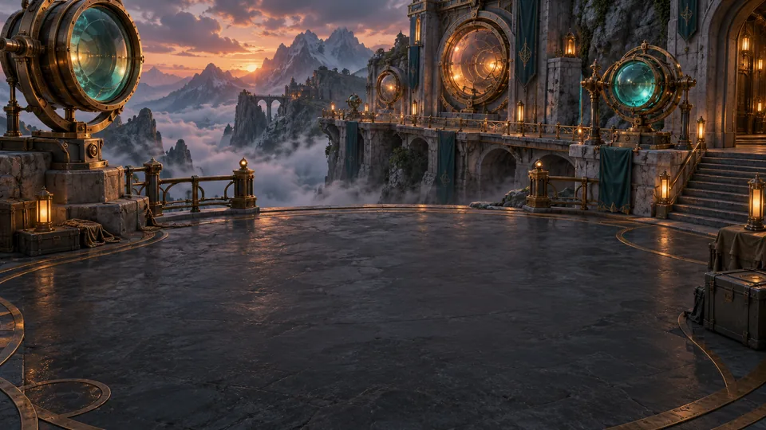

01Start here
Your first shift
Create your first game from copied text, then check its teaching against the material you supplied.
6 steps · Source includedThe Asterloom field guides
Ten different ways to try Asterloom. Pick a guide, take its source material, and follow it all the way to a learning adventure of your own.
For the desktop Mac preview · AI for creation · Offline play

New here? Start with 01Your first shiftYour first source → your first mission Illustrative world artworkThe materials are ready.Original, short sources you can download or copy.
The next step is clear.Exact controls and a checklist to keep your place.
The learning is checkable.Specific outcomes and answers grounded in the source.
Finished games play without a live AI connection. AI chat with Aster is a separate, optional connection. These guides use the published preview’s controls; its gameplay is older than the development screenshot on the homepage.
AI creation time and the chosen activity vary with the provider and source. The sample checks help you inspect the result; they are not a guarantee of a particular game or learning outcome. The samples are original fictional material for personal and family learning under the Asterloom license.
Choose your next discovery
Start small, then explore a different part of the product. Each guide includes its own material; you can also reuse a finished game where indicated.
Download all ten source kits ↓Create your first game from copied text, then check its teaching against the material you supplied.
6 steps · Source included 02Rules & classification
02Rules & classificationPractice distinguishing similar options using explicit rules and exceptions from one source.
6 steps · Source included 03Processes & systems
03Processes & systemsConnect a sequence of operations to observable symptoms instead of guessing a repair.
6 steps · Source included04Aster & evidenceCompare regular Aster's source retrieval with optional AI explanations while checking both against the same evidence.
7 steps · Source includedUse a source-defined planning problem to practice constraints, alternatives, and an explainable decision.
6 steps · Source included 06Younger learners
06Younger learnersSee how an age choice shapes a game built from concrete, child-friendly source material.
6 steps · Source included07Sources & new editionsCreate a second edition from two related sources without overwriting the original game's material or progress.
7 steps · Source included08Transcript learningBuild from a written transcript while preserving the speaker context and timestamps used to check a claim.
6 steps · Source included09Offline & continuityVerify that a finished desktop game keeps its material and saved progress locally, with adjustable music and feedback.
7 steps · Source includedExport exactly one game as an editable notebook, import it into another copy of Asterloom, and inspect the source material that travels with it.
7 steps · Source includedThe illustrations set the mood; they are not screenshots of generated games. All ten kits contain original fictional material. These guides use the published v0.7.14 controls, with generated results that vary by model.
Then make it yours
After a sample, try a short chapter or a few pages of your own notes. Keep the first source focused, inspect the teaching, and build from there.
Explore the Mac preview